Some of the data was too large to upload it to github, it can be found here: *https://drive.google.com/drive/folders/17hhYiwjyyUy8zcGM0Iib7MJGn4zDRKac?usp=sharing*
In this first half I will go over the network, looking for interesting facts. Please note that because of computing limitations, I will only use a small part of my data. I choose Deak Ferenc ter, as it is the centre of the Budapest night life, or maybe Budapest in general.
# Preparing data
data_coor <- fread("data/restaurant_info_coor_all.csv",
sep=';', encoding='UTF-8')
# Neighborhood of Deak Ferenc square
data_coor <- data_coor[data_coor$LAT < 47.5003 & data_coor$LAT > 47.4969]
data_coor <- data_coor[data_coor$LON < 19.058747 & data_coor$LON > 19.049391]
# Network
data <- fread("data/restaurant_network_name.csv",
sep=';', encoding='UTF-8')
data <- data[c(data$First) %in% c(unique(data_coor$NAME))]
data <- data[c(data$Second) %in% c(unique(data_coor$NAME))]
data <- data[data$Weight != 0]
rest_net = graph_from_data_frame(data[,-3], directed = F, vertices = NULL)
# E(rest_net)$weight <- data[,3]
rest_net <- simplify(rest_net)
plot(rest_net, vertex.label=NA)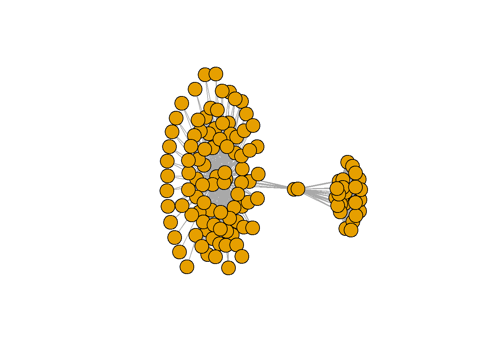
In this section I will analyse the network of restaurants around Deak Ferenc ter.
Our network has 125 nodes (or restaurants) and 3643 connections (edges) between them.
After we take a look at the restaurants, let's take a deeper look on our network. At first sight, we can already see that our network has 3 main parts, but other than that, it looks quite connected. More preciesly, using the transitivity function, we can see that our network's value is really high (0.835199), which means, it is in fact connected. This comes as no suprise, restaurants mostly share basic characteristics, but still interesting how connected it is.
Taking another look on the degree distribution we can see, that most nodes are connected to >20 other nodes, and even the strength of the graph is fairly high. Lastly the Kamada Kawai plot shows us, that the main hubs of our network are the ones in the middle.
## Using zoom = 17...## Source : http://tile.stamen.com/terrain/17/72471/45833.png## Source : http://tile.stamen.com/terrain/17/72472/45833.png## Source : http://tile.stamen.com/terrain/17/72473/45833.png## Source : http://tile.stamen.com/terrain/17/72474/45833.png## Source : http://tile.stamen.com/terrain/17/72475/45833.png## Source : http://tile.stamen.com/terrain/17/72471/45834.png## Source : http://tile.stamen.com/terrain/17/72472/45834.png## Source : http://tile.stamen.com/terrain/17/72473/45834.png## Source : http://tile.stamen.com/terrain/17/72474/45834.png## Source : http://tile.stamen.com/terrain/17/72475/45834.png## Source : http://tile.stamen.com/terrain/17/72471/45835.png## Source : http://tile.stamen.com/terrain/17/72472/45835.png## Source : http://tile.stamen.com/terrain/17/72473/45835.png## Source : http://tile.stamen.com/terrain/17/72474/45835.png## Source : http://tile.stamen.com/terrain/17/72475/45835.png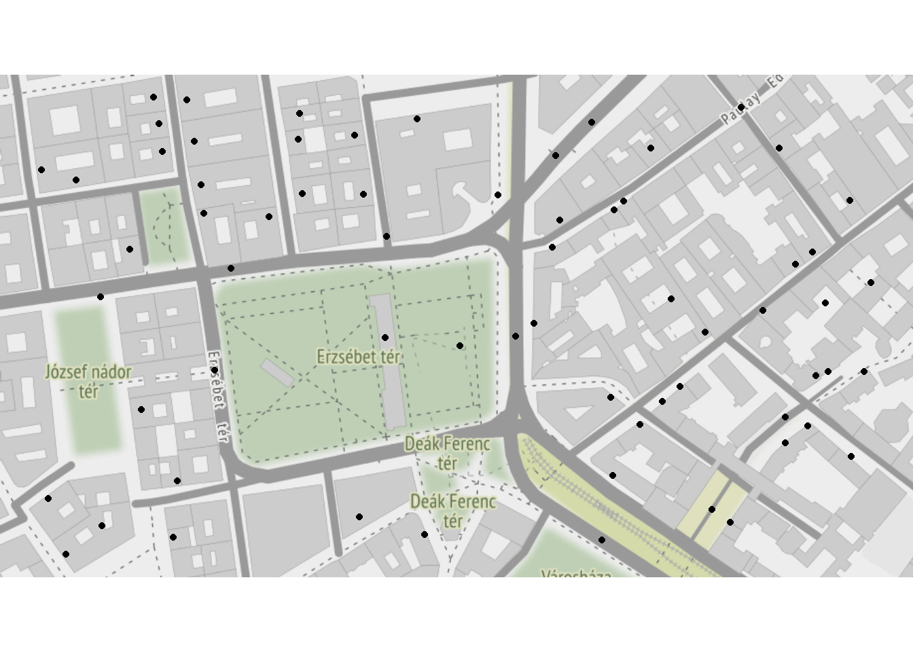
## [1] "Number of edges"## [1] 602## [1] "Number of nodes"## [1] 118## [1] "Average degree"## [1] 10.20339## [1] "The average node has 58 connections out of the total 125 nodes"## [1] 92## [1] "The most connected node, almost reaches every other node"## Bamba Marha Burger Bar
## 92## [1] "Average path length"## [1] 2.395625## [1] "The average path is really small"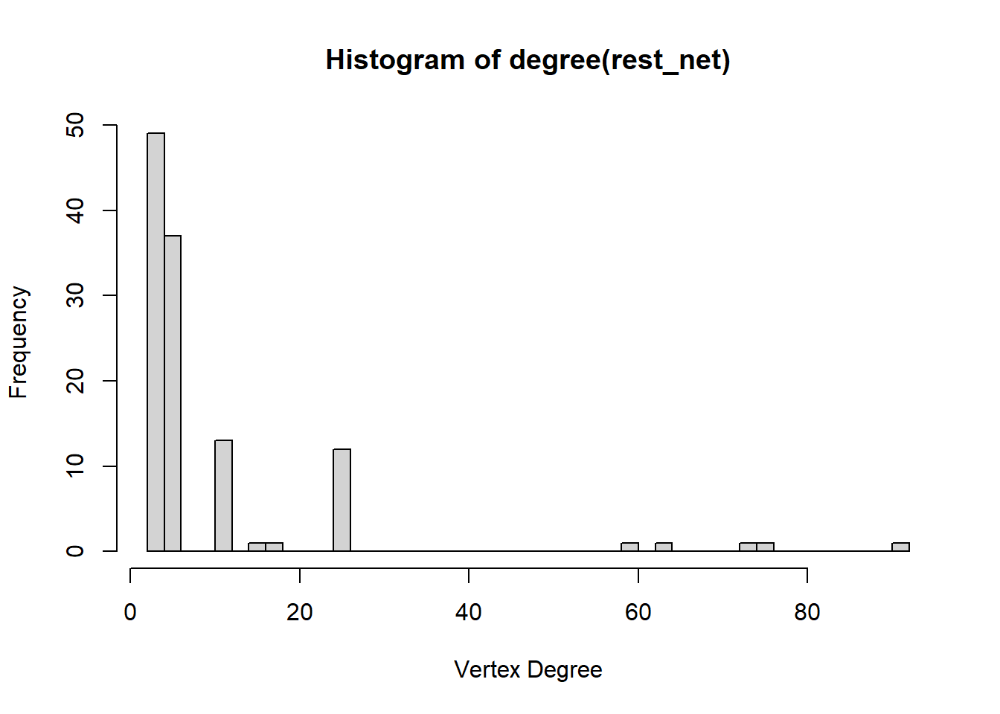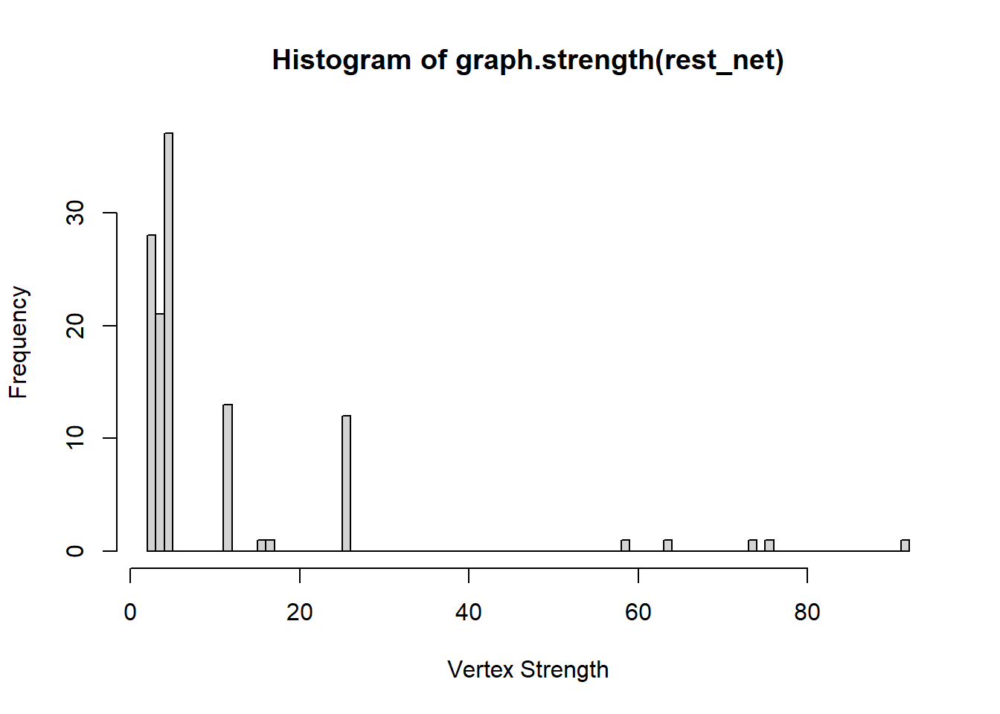
## [1] "Clustering coefficient"## [1] 0.2730713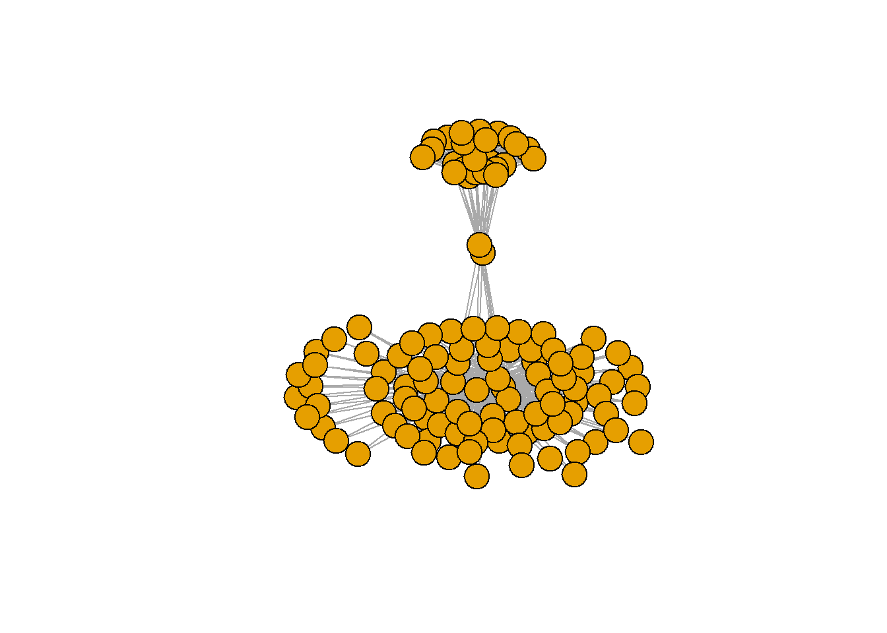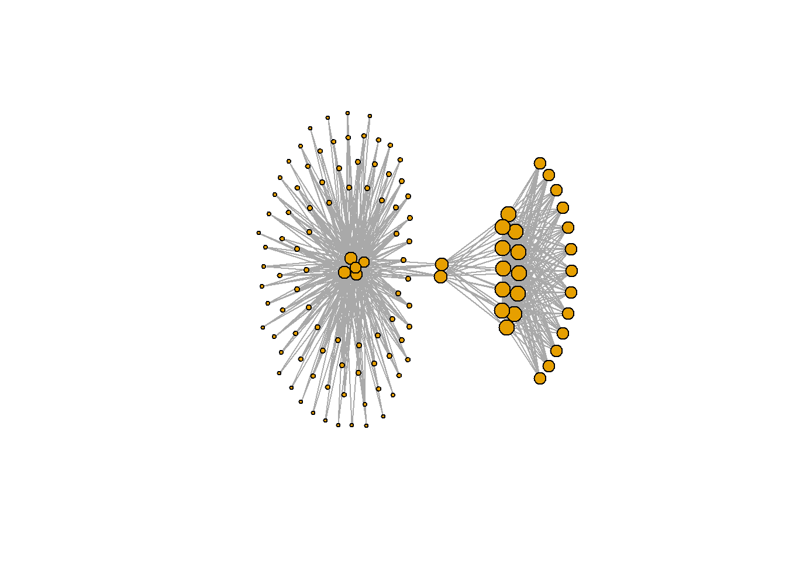
## [1] 2## Community sizes
## 1 2
## 27 91As we can see on the map, communities follow a similiar pattern on the map. The 2 outsiders, are almost next to each other in the same street, the main big community is in the center around the square, and the last one surronds these central restaurants.
This makes sense if we think about it. Reaching back to our academic Economics, those 2 outsiders might be close to each other, because they are competing like we usually model in a Hotelling scenario. The major group is in the center, probably these restaurants follow the hottest trends, and finally the last group surrounds those, as they might serve something different.
plot(kc, rest_net, vertex.label=NA)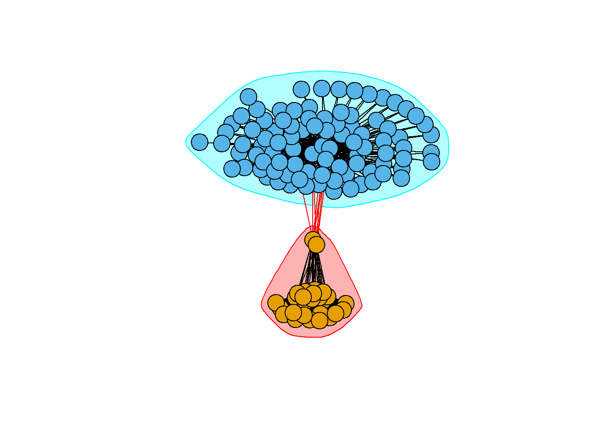
data_coor$COMM <- 3
data_coor[c(data_coor$NAME) %in% c(kc[1]$`1`)]$COMM <- 1
data_coor[c(data_coor$NAME) %in% c(kc[2]$`2`)]$COMM <- 2
qmplot(LON, LAT, data = data_coor, color = as.factor(COMM))## Using zoom = 17...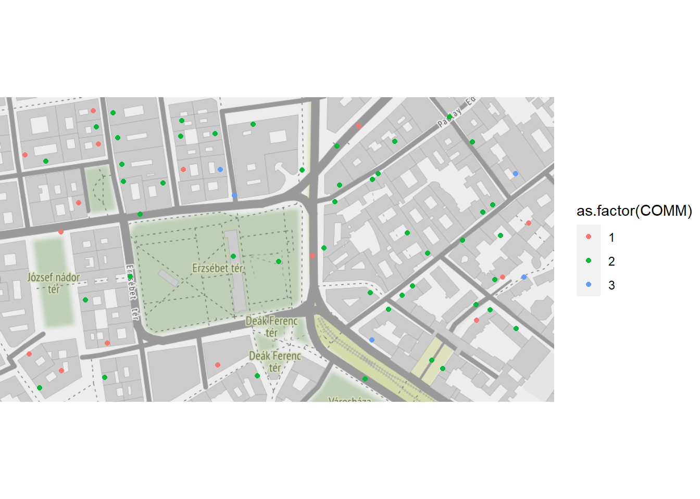
Previously we saw that our graph could be broken down into 3 main communities. In this next section I will take the largest community and do a similiar analysis as we did before, but we might expect that this smaller network will be even more connected.
We can see that both our degree and degree strenght distribution plots moved to the right, telling a similiar story we excepted, that this community is more connected with stronger connections, than our previous one.
Finally the 3 main characteristics of these restaurants are drumm roll:
Who would have thought that a major characteristic of the pubs and restaurants of Deak Ferenc ter would be alcohol.
# Data community 3
data_coor_3 <- data_coor[c(data_coor$NAME) %in% c(kc[1]$`1`)]
qmplot(LON, LAT, data = data_coor_3)## Using zoom = 17...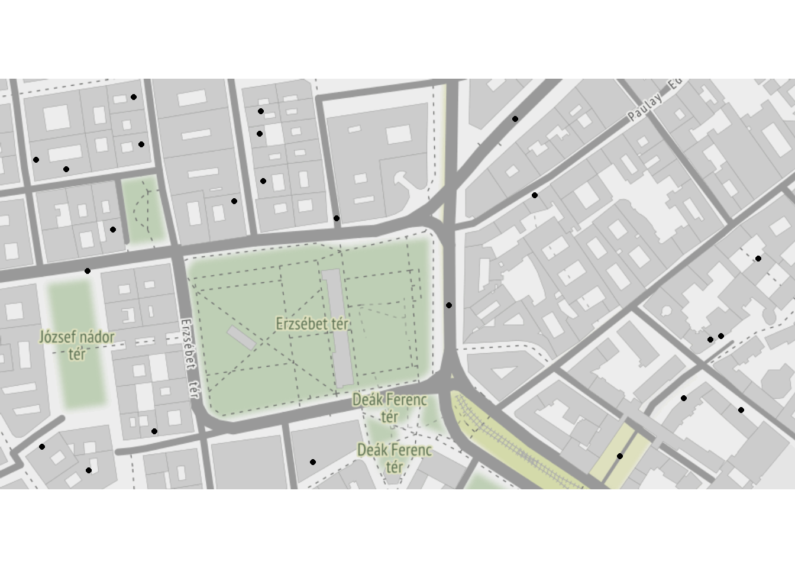
data_3 <- data[c(data$First) %in% c(kc[1]$`1`)]
data_3 <- data[c(data$Second) %in% c(kc[1]$`1`)]
rest_net_3 = graph_from_data_frame(data_3[,-3], directed = F, vertices = NULL)
# E(rest_net_3)$weight <- data_3[,3]
rest_net_3 <- simplify(rest_net_3)
plot(rest_net_3, vertex.label=NA)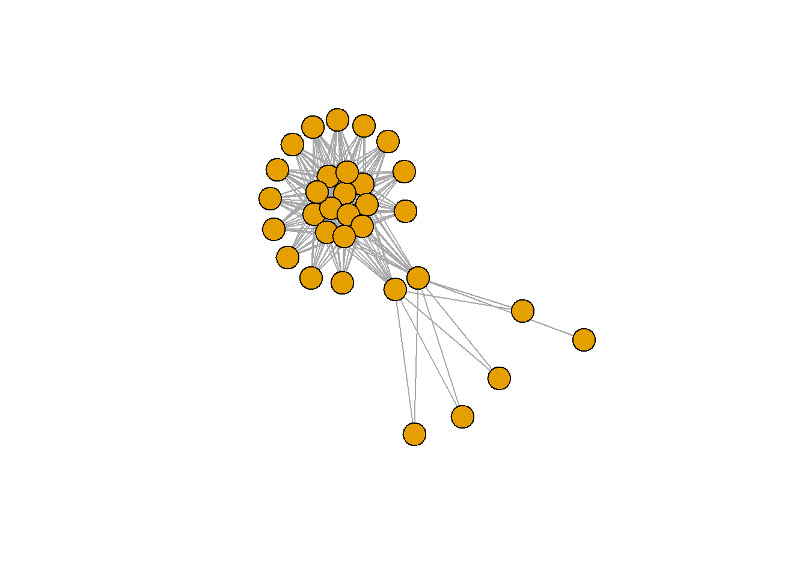
hist(degree(rest_net_3), xlab='Vertex Degree', ylab='Frequency',
breaks = 50)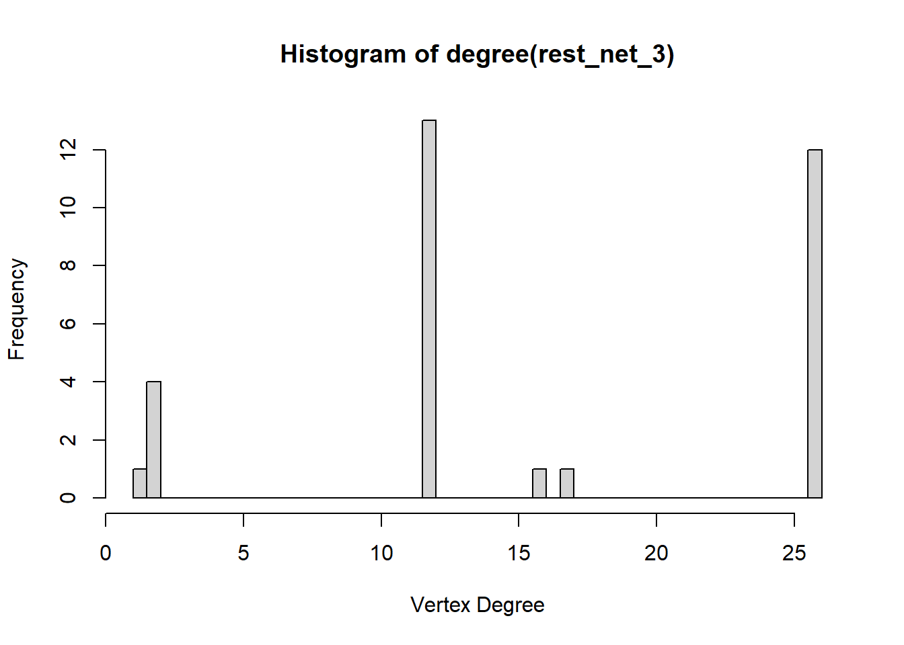
hist(graph.strength(rest_net_3), xlab='Vertex Strength', ylab='Frequency', breaks = 100)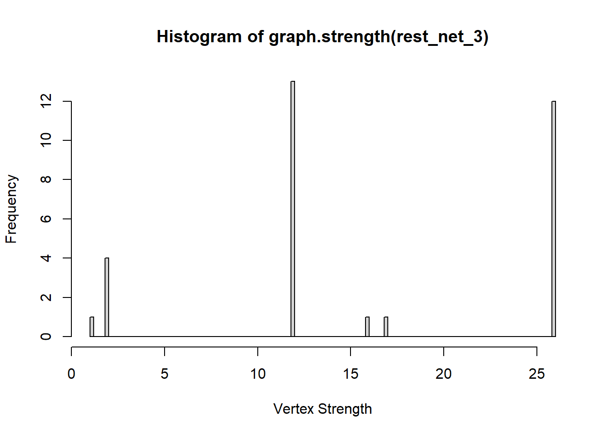
l <- layout.kamada.kawai(rest_net_3)
plot(rest_net_3, layout=l, vertex.label=NA, vertex.size =10*sqrt(hub.score(rest_net_3)$vector))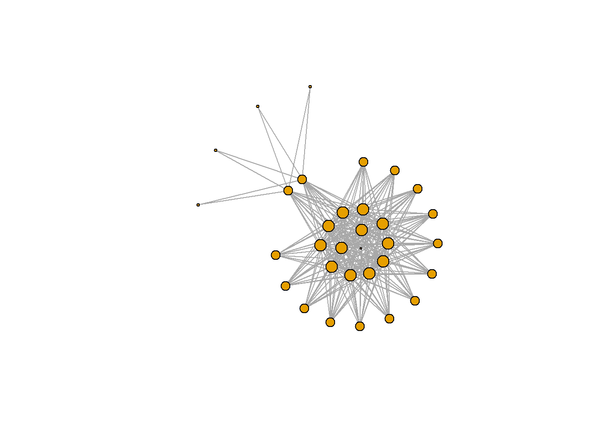
transitivity(rest_net_3)## [1] 0.7233958# Most frequent services
a <- data_coor_3[,-c(1:14)]
a <- a[,c('LAT','LON', 'COMM'):=NULL]
head(sort(colSums(a[,c('LAT','LON'):=NULL]), decreasing = T))## Warning in `[.data.table`(a, , `:=`(c("LAT", "LON"), NULL)): Column 'LAT' does
## not exist to remove## Warning in `[.data.table`(a, , `:=`(c("LAT", "LON"), NULL)): Column 'LON' does
## not exist to remove## Cafe_CUISINES Seating_SERVICES
## 2 1
## Free Wifi_SERVICES Takeout_SERVICES
## 1 1
## Wheelchair Accessible_SERVICES Breakfast_MEALS
## 1 1There are not as many interesting features in these last two communities, which might mean that our original explanation was correct.
# Community 2
data_coor_2 <- data_coor[c(data_coor$NAME) %in% c(kc[2]$`2`)]
a <- data_coor_2[,-c(1:14)]
a <- a[,c('LAT','LON', 'COMM'):=NULL]
head(sort(colSums(a), decreasing = T))## Seating_SERVICES Lunch_MEALS Dinner_MEALS
## 48 46 44
## Serves Alcohol_SERVICES European_CUISINES Table Service_SERVICES
## 38 36 36# Community 3
data_coor_1 <- data_coor[c(data_coor$NAME) %in% c(kc[3]$`3`)]
a <- data_coor_1[,-c(1:14)]
a <- a[,c('LAT','LON', 'COMM'):=NULL]
head(sort(colSums(a), decreasing = T))## International_CUISINES European_CUISINES Hungarian_CUISINES
## 0 0 0
## Central European_CUISINES Dinner_MEALS Late Night_MEALS
## 0 0 0In conclusion we saw that the restaurants around Deak Ferenc ter are very connected, but they can be broken down into smaller communities. These communities are seem to be explained by how far are they from the centre of the square.
It might be interesting to research if this pattern is true among every restaurant in the city, or if we just picked the right place and got lucky that we could distinguish them so nicely.
For the recommendation logic, I will create a network with weights showing how many similiar features 2 restaurant has. Then I will take user's feedback and use them to find other restaurants that are connected to those they already like, or avoid ones that they dislike.
# The network's weights
rest_weight <- fread("data/restaurant_network_name.csv",
sep=';', encoding='UTF-8')
rest_dummy <- fread("data/restaurant_dummy_name.csv",
sep=';', encoding='UTF-8')
number_rest <- data.table(table(rest_dummy$NAME))[order(-N)]
names(number_rest) <- c('NAME', 'NUMBER')
# '''
# READING IN MULTIPLE TABLES
# '''
loadGroupRating <- function(path) {
files <- list.files(path = path)
f <- list()
for (i in 1:length(files)) {
print(paste0(paste0(path, "/"), files[i]))
a <- read_excel(paste0(paste0(path, "/"), files[i]), na='NA')
f[[i]] <- a
names(f[[i]]) <- c("NAME", gsub('.xlsx', '', files[i]))
}
return(f)
}
mergeGroupRating <- function(path) {
f <- loadGroupRating("data/Group")
rest_nm <- data.table(f[[1]]$NAME)
names(rest_nm) <- c('NAME')
rest_nm <- merge(rest_nm, f, by = c('NAME'), all=T)
for (i in seq(1, ncol(rest_nm)/2-1, by = 1)) {
rest_nm[,c(paste0('NAME.', i)):=NULL]
}
return(rest_nm)
}The individual recommandation is fairly simple. First we sort for those restaurants that our user already rated, and take their average rating. We then subtract the average from each rating (normalising to 1), therefore the results will lean toward restaurants they found outstanding, and punish those that they disliked. After that, we multiply the new rating score with the edge weights, giving us a new score, which now reflects both their preference and the similarities between those restaurants. Finally, we sort them and rank them by this new number.
Unfortunetly I could not create a collaborative recommendation system as it would have required user data, which I could not get. I asked a few of my friends, and I thought about scraping Google places, but those did not work out properly.
# '''
# INDIVIDUAL RECOMMENDATION
# '''
getUserRec <- function(user_rating, weights){
#We dont care about restaurants where we have no informations
names(user_rating) <- c('NAME', 'RATING')
user_rating <- na.omit(user_rating)
# Some users might be more critical than others, so we extract the average rating,
# therefore really negative and really positive ratings show better results
avg_rat <- mean(user_rating$RATING) - 1
# Keep relevant restaurants
weights_sorted <<- weights[c(weights$First) %in% c(user_rating$NAME)]
user_rat_weights <- merge(weights_sorted, user_rating, by.x = c('First'), by.y = c('NAME'), allow.cartesian=TRUE)
user_rat_weights$RATING <- user_rat_weights$RATING - avg_rat
# Now we score each restaurant, by the rating of the user + how similiar it is
predicted_rat <- user_rat_weights$RATING * user_rat_weights$Weight
predicted_rest <- cbind(user_rat_weights, predicted_rat)
# Sum all the scores, order decreasing
predicted_rest_sum <- predicted_rest[, pred_score:=sum(predicted_rat), by=Second][order(-pred_score)]
# control for multiple restaurants
predicted_rest_sum <- merge(predicted_rest_sum, number_rest, by.x = c('Second'), by.y = c('NAME'), allow.cartesian=TRUE)
predicted_rest_sum$pred_score <- predicted_rest_sum$pred_score / predicted_rest_sum$NUMBER
predicted_rest_sum <- predicted_rest_sum[order(-pred_score)]
# Taking unique restaurants
predicted_rest_sum <- unique(predicted_rest_sum, by='Second')
predicted_rest_sum$RANK <- c(nrow(predicted_rest_sum):1)
return(predicted_rest_sum)
}Test it yourself: A blank rating file can be found in 'data/Empty_Ratings.xlsx', then run the code bellow from the .Rmd file
#Recommending restaurant, by a user's ratings
# test <- read_excel('data/Empty_Ratings.xlsx', na='NA')
# enyem <- getUserRec(f[[4]], rest_weight)
#
# head(enyem$Second)Finally we might want to eat or go out together. In this case, we can use the same logic as before and then vote a winner. Because our system usually votes for most restaurants I use a similiar voting system as the Borda voting.
# '''
# TEAM RECOMMENDATION
# '''
# If we have multiple users that would like to dine together
# We use Borda voting to find the best restaurant https://en.wikipedia.org/wiki/Borda_count
getTeamRec <- function(ratingDF, rest_weight) {
restaurants <- unique(ratingDF[,1])
names(restaurants) <- c("NAME")
restaurants$SCORE <- 0
users <- colnames(ratingDF)
for (i in c(2:length(users))){
curr_rating <<- cbind(ratingDF[,1], ratingDF[[users[i]]])
usr_rec <<- getUserRec(curr_rating, rest_weight)
restaurants_m <- merge(restaurants[,c('NAME')], usr_rec[,c('Second', 'RANK')], by.x = c('NAME'),
by.y = c('Second'), all.x = T)
restaurants_m <- restaurants_m[order(-NAME)]
restaurants_m$RANK[is.na(restaurants_m$RANK)] <- 0
restaurants$SCORE <- restaurants$SCORE + restaurants_m$RANK
}
restaurants <- restaurants[SCORE != 0]
return(restaurants[order(SCORE)])
}Sample team, also known as: me and my friends and a few random guys from Google places:
team <- mergeGroupRating("data/Group")## [1] "data/Group/Akos.xlsx"
## [1] "data/Group/DorGal.xlsx"
## [1] "data/Group/EndreD.xlsx"
## [1] "data/Group/GerM.xlsx"## New names:
## * `` -> ...2## [1] "data/Group/GyulaDora.xlsx"
## [1] "data/Group/JTamas.xlsx"
## [1] "data/Group/SzutB.xlsx"
## [1] "data/Group/VonD.xlsx"tht <- getTeamRec(team, rest_weight)
head(tht)## NAME SCORE
## 1: I Love Churros 239
## 2: Big Soup Ramen Bar Budapest 410
## 3: Mantra Masala 574
## 4: California Coffee Company - Szent Istv n t‚r 1512
## 5: 2Cafe Pattaya 1621
## 6: 1Star Kebab T”r”k \220tterem Nyugati 1743Asking my friends for feedback, the results were fairly convincing, but unfortunetly right now it is not possible to explore these places. Altough, in the coming weeks I will test this recommendation logic and see for myself if it truly works.